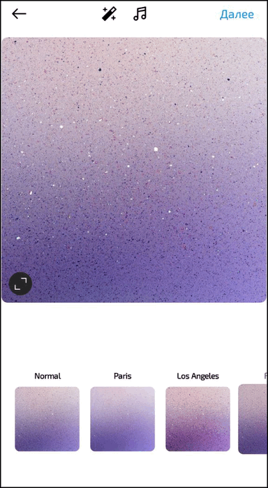
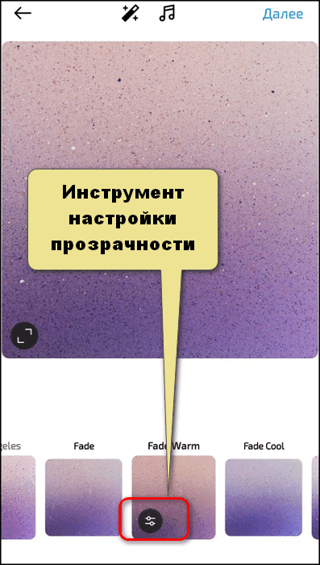
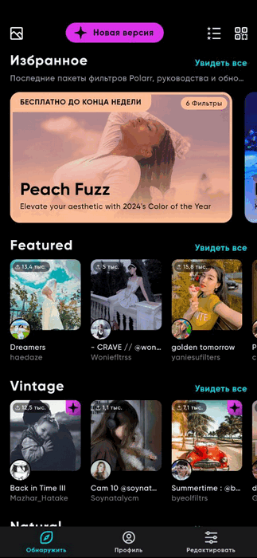
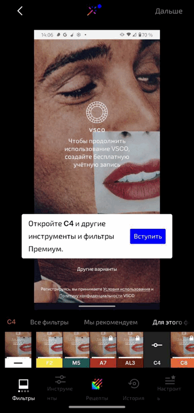

ТОП фильтров для обработки фото в Инстаграм

Сделать фото в Инстаграме* интереснее помогут фильтры. Это встроенные надстройки цвета и яркости в редакторе социальной сети или в других приложениях.
Функции фоторедактора в Инстаграме*
Изначально Инстаграм* был запущен как социальная сеть, где пользователи могут разместить свои снимки, посмотреть записи друзей, прокомментировать и оставить лайки. То есть основная цель – фотографии и взаимодействие с ними. Поэтому уже во втором обновлении были добавлены первые фильтры для изменения картинки.
Фильтр – это надстройка, с определенными значениями цвета, оттенка, резкости, света и тени.
Добавляя, пользователь получает измененное изображение и может регулировать прозрачность фильтра. На данный момент Инстаграм* насчитывает в своей коллекции около 43 надстроек, включая недавние 20 добавленных. Другие функции редактора:
- обработка в ручную. Указать контраст, цвет и яркость, резкость, оттенки теней и света;
- фильтры. Каталог фильтров с возможность настроить прозрачность;
- обрезка и перспектива. Выровнять фотографию таким образом, чтобы в кадре помещались все важные элементы.
После редактора изображения следует раздел с добавлением отметок, музыки и текстового описания. Это касается вкладки «Публикации», а для работы с Историями есть свой отдельный фоторедактор, чтобы улучшить качество фото. Так, добавляя картинку из Галереи в Сторис, пользователь может наложить один из 20 фильтров, воспользоваться маркером, карандашом или кистью любого оттенка и размера, использовать стикеры куда входит микс из фотографий и визуальные эффекты, выбрать положение картинки: увеличить, отдалить, перевернуть, добавить текст. Снимок можно отредактировать через Истории, например использовав макеты и сохранить в Галерею мобильного телефона, без последующего размещения в профиле. При работе с публикациями отредактированного фото будет сохранено на смартфон только после размещения.
Список новых фильтров
В социальной сети появились шаблоны, которые добавляют на картинку блики, затеняют снимок и делают его ярче.

Список новых:- Color Leak. Добавляет два блика;
- Halo. Обесвечивает снимок, серый оттенок;
- Gritty. Черно-белый с добавлением крупной зернистости;
- Зернистость с размытием;
- Midnight. Затемняет снимок, как будто тот был сделан ночью;
- Emerald. Зеленый оттенок и усиление резкости;
- Rose. Розовый оттенок и зернистость;
- Hyper. Увеличение яркости на белый цвет, максимальная насыщенность;
- Graphite. Черно-белый с дополнительным усилением: максимальный белый;
- Simple, Fade, Boost Cool. Голубой оттенок, зернистость;
- То же, но с Warm. Теплый оттенок, зернистость;
- Fade. На снимке появляется белая пелена;
- Los Angeles. Увеличение резкости и оттенков;
- Paris. Мягкий фильтр с выбелением и размытием.
Чтобы посмотреть перечень новых фильтров, нужно открыть раздел: «Создать публикацию» и выбрать один из шаблонов, которые появляются первыми в меню редактора.
Кстати, если вам интересно, кто у вас был на страничке в Инстаграм*, тогда читайте мою статью.
Как красиво редактировать фото
Сделать фото с фильтрами в Инстаграм* помогут не только встроенные функции социальной сети, а и сторонние приложения. Преимущество последних в том, что там уже присутствуют шаблоны не требующие дополнительной обработки. Но фоторедакторы не редко портят качество снимка или ужимают размер, и этот момент может стать решающим в выборе способа обработки.

Советы по редактированию:- минимально использовать стикеры, рамки;
- выбирать фильтры, которые не пересвечивают фото и не делают его слишком пестрым;
- ознакомиться с разделом «Параметры» в любом фоторедакторе, чтобы выбрать максимальное качество.
Пользуясь этими советами, можно создать много красивых снимков и добавить в социальную сеть не беспокоясь о понижении качества. А что же с фоторедактором Инстаграма*? Социальная сеть предлагает несколько вариантов редактирования:
- только с обработкой через настраиваемые параметры, без фильтров;
- фильтры + обработка;
- только фильтр.
Или же – оставить снимок без дополнительного редактирования. У формата загрузки «карусель» (одновременно до десяти фотографий в одной публикации) тоже есть два варианта обработки: добавить фильтр сразу на все медиафайлы или отредактировать каждый отдельно.
Мобильные приложения с фильтрами в Инстаграм*
Фильтры для обработки фото можно найти в приложениях, доступных на устройствах Android и iOS. Они делятся на:
- изменение внешности;
- с применением искусственного интеллекта;
- только с фильтрами.
Также есть бесплатные, платные и условные: те, где доступна лишь половина инструментов обработки. Популярными для изменений внешности считаются:
- FaceTune. Убрать недостатки, увеличить глаза, губы и другое.
- Persona. Заранее добавленные шаблоны, которые приложение подставляет на снимок и меняет внешний вид человека. Есть отдельные фильтры с применением искусственного интеллекта, изменением цвета и контраста.
Приложения с красивыми фильтрами могут включать инструменты полного изменения окружающей среды. Например, как в FaceApp: лицо человек подставляют на другое фото, меняя оттенки таким образом, чтобы они совпадали с новой картинкой.
Polarr: для iOS
Приложение Polarr – это нескончаемый список фильтров для редактирования фотографий. «Фишка» в том, что каждый пользователь может создавать шаблоны и размещать их в общий доступ. Другие же, могут подписываться на авторов и составлять личную коллекцию.

Polarr предлагает не только цветокоррекцию, но и редактирование с применением стикеров, текста. Приложение бесплатное, но есть ограничения по максимальному количеству фильтров в личной коллекции и отметок «Мне нравится», если пользователь хочет оценить работу какого-либо автора.VSCO: для Android
Одно из первых приложений в Play Market, которое было предназначено для создания фильтров и шаблонов. Чтобы воспользоваться, нужно зарегистрировать учетную запись или авторизоваться через социальные сети.

Условно бесплатно и у пользователя есть ограниченный набор инструментов. Но даже с их помощью можно создать необычные снимки в высоком качестве.Рекомендации по формату фото для Инстаграма*
Снимая фото через стандартную камеру социальной сети – те потеряют в качестве. Особенно «пострадали» пользователи Android: часто фотографии теряют яркость, баланс контраста и теней. Поэтому стоит обратить внимание на редакторы, поддерживающие функцию повышения качества или работы с изображениями для социальных сетей.
Например, с компьютера редактирую фото для Инстаграма* или Вконтакте, стоит выбирать параметр сохранения снимка: «for Web», в мобильных приложениях – указывать функцию: «Поделиться» вместо сохранения в Галерею.
Другие рекомендации:
- некоторые фото стоит проверять на разных устройствах. Если автор задался целью создать снимок в коммерческих целях или качество фото решающий фактор в развитии блога – нужно проверить на своем телефоне, с максимальным качеством и отключенной функцией: «Повышение яркости», а также на ноутбуке/плншете и другом смартфоне;
- лучше публиковать квадратные снимки. Соотношение сторон 16:9 – идеальное для размещения в Инстаграм*.
Для повышения качества пользователи порой применяют моды. Это специальные утилиты, где в настройках можно отыскать пункт: «Максимальное качество для снимков». Но такой способ актуален только для владельцев устройств под управлением Android.